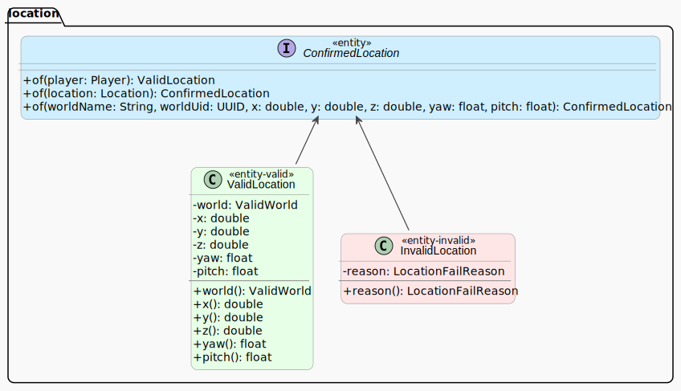

Interface ConfirmedLocation
- All Known Implementing Classes:
InvalidLocation,ValidLocation
Represents a bukkit location as an algebraic data type, implemented using a sealed interface
with permitted types of
ValidLocation or InvalidLocation.
Note: The encapsulated location is confirmed to have a valid world at time of creation, but the location world referenced may become unavailable at any time after creation of a ConfirmedLocation.

-
Method Summary
Static MethodsModifier and TypeMethodDescriptionstatic ConfirmedLocationCreate a confirmed location from raw parameter valuesstatic ValidLocationof(org.bukkit.entity.Player player) Create a valid confirmed location from a player locationstatic ConfirmedLocationof(org.bukkit.Location location) Create a confirmed location from a location
-
Method Details
-
of
Create a valid confirmed location from a player location- Parameters:
player- the player object with the location to be used- Returns:
- the valid player location wrapped in a ValidLocation object
-
of
Create a confirmed location from a location- Parameters:
location- the location to confirm- Returns:
- ValidLocation if the location has a valid, loaded world; else InvalidLocation
-
of
static ConfirmedLocation of(String worldName, UUID worldUid, double x, double y, double z, float yaw, float pitch) Create a confirmed location from raw parameter values- Returns:
- ValidLocation if the worldUid references a valid, loaded world; else InvalidLocation
-